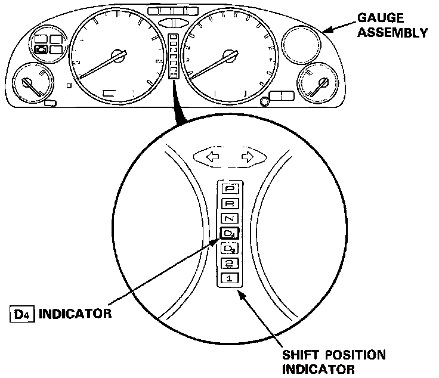
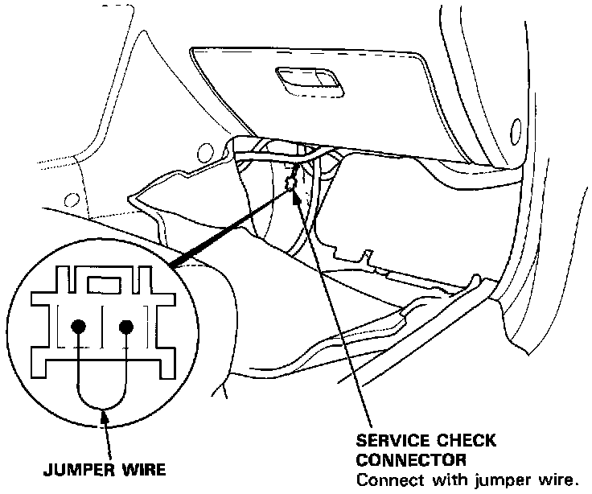
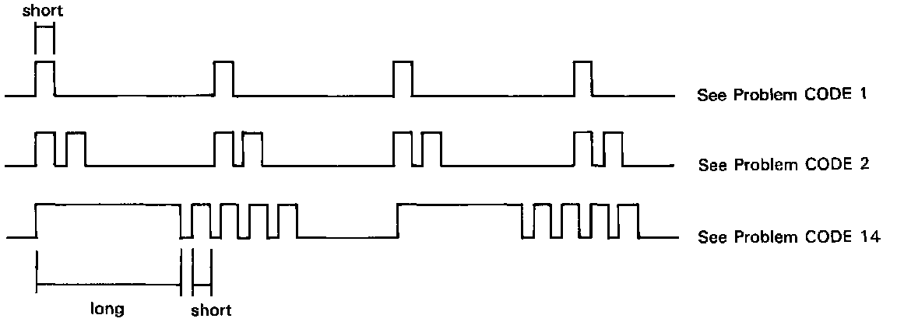

Without Scan Tool


When the (D4) indicator light has been reported on, connect the two terminals of the Service Check Connector together. Then turn on the ignition switch and observe the (D4) indicator light.

Problem codes 1 through 9 are indicated by individual short blinks, Problem codes 10 through 16 are indicated by a series of long and short blinks. One long blink equals 10 short blinks. Add the long and short blinks together to determine the problem code. After determining the problem code, refer to the electrical system Symptom-to-Component Chart. DTC List - Transmission Control